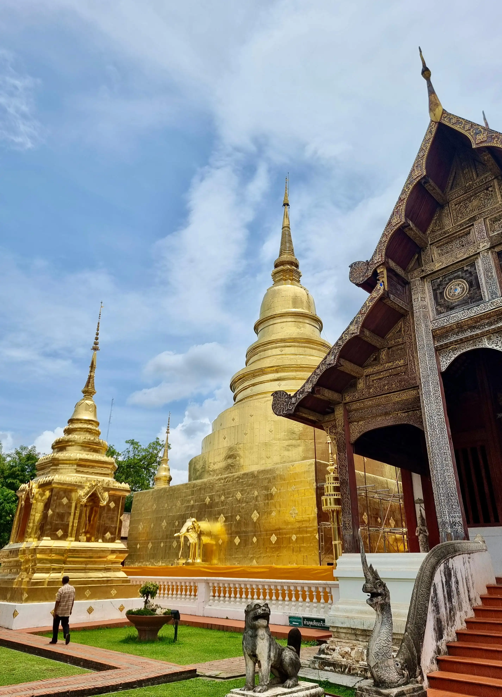
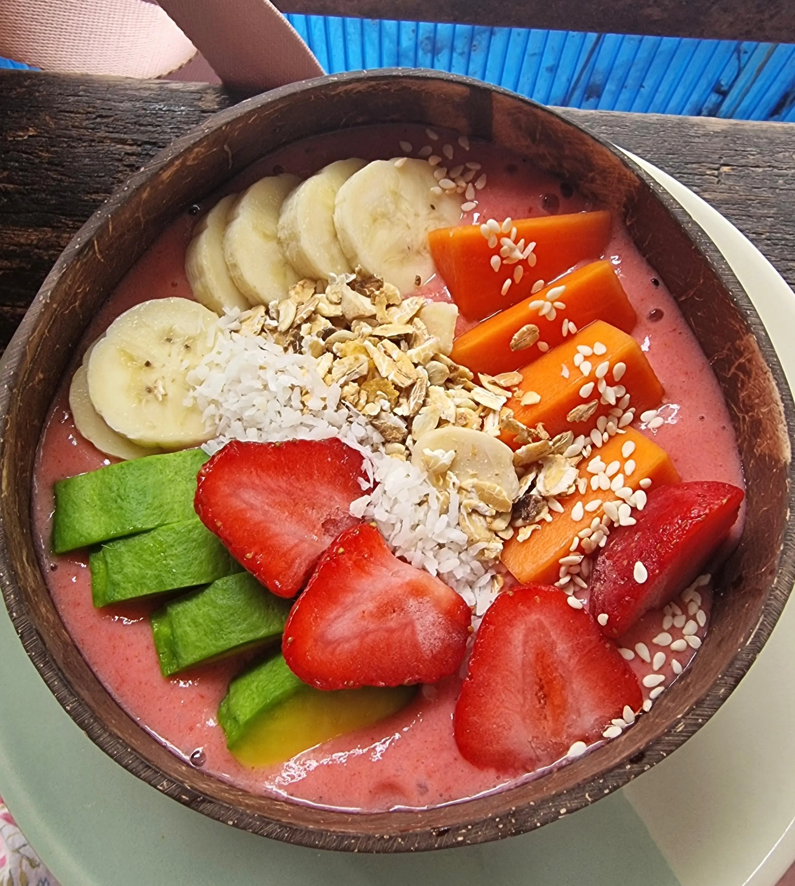
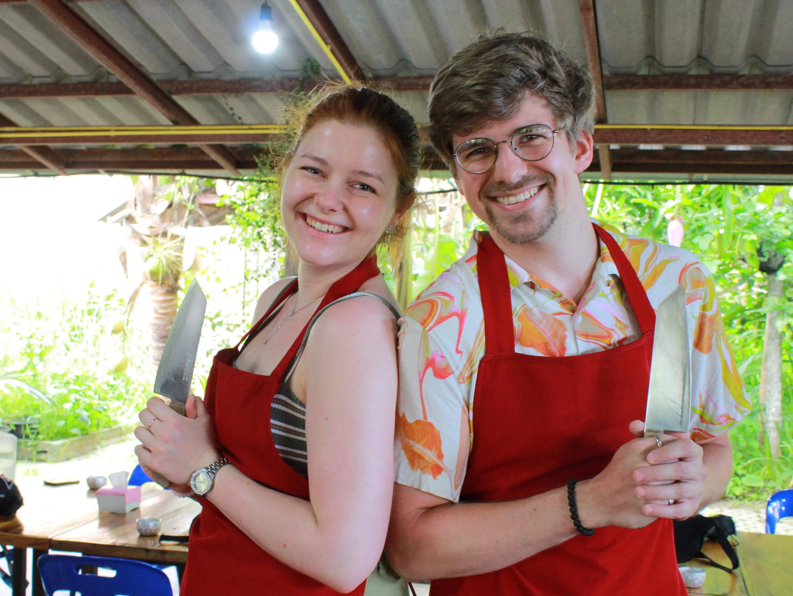
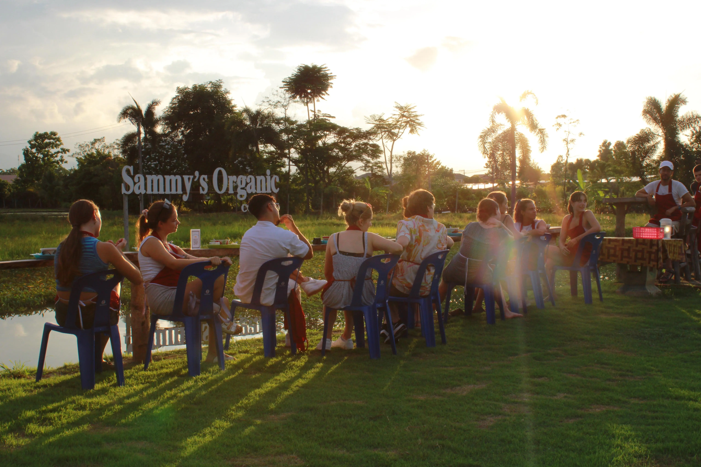
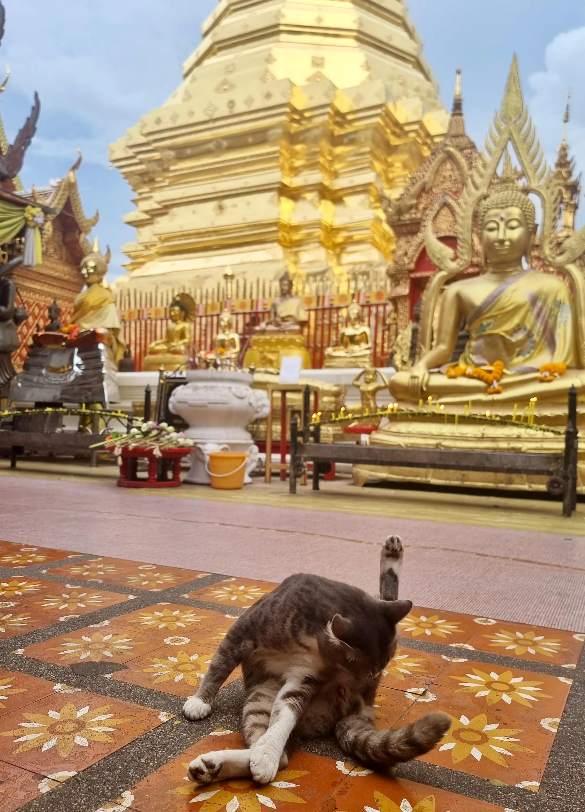

Der Flug nach Chiang Mai verläuft gut. Wir haben dicke Puffer eingeplant um zum Flughafen zu kommen, deswegen haben wir viel Zeit beim Warten und gönnen uns das erste Mal westliches Essen bei Burger King. In Chiang Mai angekommen merkt man sofort, dass es eine ganz andere Atmosphäre ist. Die Stadt ist zwar auch groß, aber hat ihre Heimlichkeit nicht verloren.
Die Häuser im alten Zentrum, wo auch das Lee Chiang Hotel liegt, in dem wir unterkommen, besteht aus hübschen vierstöckigen Häusern. Außerdem reihen sich Tempel an Tempel.
Das Taxi zwangt sich durch enge Straßen, und dann sind wir auch schon mit unserem schweren Gepäck da. Wir ruhen uns nicht lange aus, sondern laufen gleich los, weil es schon relativ spät ist. Die Rezeptionistin meinte, wir müssen im Prinzip nur eine halbe Stunde geradeaus laufen, dann kommen wir bei der Walking Street von Chiang Mai raus.
Unter Walking Street versteht man im Prinzip Schlendermeilen, an denen sich Essens- und Verkaufsstände nebeneinander drängen.

Der Weg dahin ist auch schon schön: wir laufen erst durch die Tempelanlage des Wat Pra Sing die aus vielen unterschiedlichen Tempeln inklusive Schule und Mönchsschule besteht. Hier halten wir uns ein bisschen auf, besichtigen die Gebetsräume mit erstaunlich realistischen Wachsstatuen einiger Buddhas. Eine Katze sonnt sich zwischen Ranken und Bänken. Dann laufen wir an hübschen, alternativen Läden vorbei zum Markt.
Es gibt viel billige Souvenirs, aber auch schönen Schmuck, aufwendig geformte Seifenstücke und Hosen aus bunt bedrucktem Stoff. Wir schauen uns viel um und kommen erst mal an. Aber eins kann ich sagen: Chiang Mai gefällt mir jetzt schon.
Lange ausschlafen ist angesagt. Wir starten entspannt in den Tag und kaufen uns einen leckeren Thai Tea an einem Straßenstand. Das ist ein typisches Getränk auf Eis, das aus schwarzem Tee mit Vanillegeschmack besteht und mit zuckriger Kondensmilch gesüßt wird.
Anschließend suchen wir einen Restaurant Tipp, der nur Khao Soi verkauft. Khao Soi, das ist nordthailändische Nudelsuppe mit Kokosmilch, Huhn und Gemüse, getoppt mit frittierten Eiernudeln. Ein Traum.
Der kleine, unscheinbare Stand in einem Hinterhof ist so voll, dass sich zwei andere Reisende an unseren Tisch setzen. Ziv, ein zurückhaltender Israeli, und ein lauter, munterer Japaner. Wir unterhalten uns und sind beeindruckt, als Ziv erzählt, dass er hier immer joggen geht. Ich bin froh, wenn ich es laufend nach Hause schaffe. Wir erzählen ihnen von den Bremer Stadtmusikanten, die sie aber nicht kennen, dann gehen wir wieder getrennte Wege.
Gegenüber des Nudelsuppen-Ladens ist ein ziemlich uriger, ziemlich heruntergekommener Tempel aus rotem Stein, der Wat Chet Yot. Bäume wachsen auf und neben den Gebäuden. Der Tempel hat einen ganz eigenen Charme, weil er eben nicht Gold verziert ist, sondern beinahe aussieht wie eine Ruine im Urwald.
Meine Mückenstiche kratzen und ich versuche drei Minuten lang, den kleinen Tiegel mit Creme zu öffnen, in dem ätherische Creme gegen den Juckreiz ist. Ich schwitze, habe irgendwann dann endlich Erfolg und bilde mir spontane Linderung ein, also ziehen wir weiter.

Ziel ist ein Café mit leckeren Smoothies, die uns erfrischen und den Eindruck geben, wir würden etwas Gesundes nach der dicken Suppe essen. Nach einer Pause im Hotel laufen wir weiter durch die Stadt und kaufen uns Kleidung bei einem der Läden auf dem Weg zum Nachtmarkt. Für Julius gibt es zwei schöne neue Hemden und eine lockere Hose, ich kaufe mir eine kurzärmlige Jacke für Tempelbesuche und eine Binde-Hose.
Am Freitag haben wir ein interessantes Programm: Wir haben einen Kochkurs in Sammys Cooking School gebucht. Morgens werden wir abgeholt und etwa eine Stunde aus der Stadt raus aufs Land gefahren.
Wir fahren mit einem Sangthaew, den für Chiang Mai typischen Sammeltaxen. Man kann sie sich vorstellen wie Pick Ups mit überdachter Ladefläche und zwei schmalen Bänken, die längs angebracht sind. Je nach Fahrer und Passagier passen 9 bis 12 Leute hinein.
In unserem sitzt nur ein weiteres Pärchen, das aus der Nähe von Freiburg kommt. Wir unterhalten uns nett mit Bianca und Karim und sind begeistert, als wir auf Sammys Bio Hof ankommen. Eine Gruppe mit anderen Reisenden wartet bereits.
Wir kriegen von Sammy, einem mittelalten, aufgeweckten Mann eine kurze Einführung, wo unsere Einzelkochplätze sind und wie das Gherde funktioniert. Bereits geschnittene Zutaten für eine Person stehen an jedem Platz bereit.
Wir kochen mehrere Gerichte über den Tag verteilt. Alles schmeckt super lecker und Sammy erzählt uns viel zu den Zutaten. Auf Julius' Frage hin erklärt er, dass 50 % von allem was er isst und in seinen Kochkursen verbraucht, aus eigenem Anbau stammt. Ziemlich beeindruckend!

Nach dem ersten beiden Gerichten bekommen wir eine kleine Führung über seinen Hof, er zeigt uns alle Pflanzen und seinen Teich mit Kätzchen und anderen Fischen ("Aber die werden nicht gegessen! Das sind Sammy Juniors!"). Er schneidet eine Kokosnuss auf und schält das Fleisch heraus. Jedem von uns gibt er eine Hand voll des geriebenen Fleisches und zeigt uns, dass daraus Kokosmilch wird, wenn man nur den Saft drückt. Und wie gut die schmeckt! Das übrige Kokosfleisch schmeißen wir in die hungrigen Mäuler der Fische.
Anschließend bereiten wir gemeinschaftlich Papaya Salad aus grünen Mangos (die sind sauer und herbhaft) und Papaya vor. Je nach Schärfegrad kommen mehr oder weniger Chili hinein. Die Sauce besteht unter anderem aus Fischsauce und ist süßlich herbhaft. Ich probiere natürlich mit einer großen Klappe die schärfste Version des Salats und mein Mund brennt. Aber lecker ist es.
Zum Schluss kochen wir noch Mango Sticky Rice, klebrigen Reis mit Kokosmilch und reifer, süßer Mango. Die tragen wir zusammen mit dem scharfen Curry auf eine Bank in einem von Sammys Reisfeldern und genießen den Sonnenuntergang bei tollen Essen. Glücklich und voll fahren wir zurück zum Hotel durch Dörfer, süße, alte und moderne Häuser und dann schließlich durch verstopfte Straßen von Chiang Mai.

Als wir im Hotel ankommen, ist es gerade dunkel geworden. Da es in Thailand früh dunkel wird (gegen 7 Uhr), und wir noch nicht müde genug sind, um den restlichen Abend auf dem Hotelzimmer zu verbringen, beschließen wir, noch mal zu der Walking Street zu fahren. Dieses Mal nehmen wir ein Sangthaew und sind sofort im Trubel.
Es wird für eine Muay Thai Show geworben, ein thailändischer Boxkampf, der jeden Abend mit Teilnehmern aus der ganzen Welt stattfindet. Als wir vor dem Eingang der bereits laufenden Show stehen und Karten kaufen wollen, entscheiden wir uns allerdings doch dagegen: der Raum ist nicht klimatisiert und die Zuschauer jubeln nicht, rufen nichts, sondern sitzen einfach nur auf ihren Plätzen wie im Kino, während zwei Männer gegeneinander kämpfen. Die Stimmung ist praktisch nicht vorhanden.
Etwas traurig gehen wir also wieder die Stufen der Arena herunter und zurück zum Markt, da fällt uns eine aufgestellte Frau ins Auge: Sie wirbt für eine Ladyboy Show, eine Cabaret Show, die bald startet. Also gut, dann also statt Boxkampf eine Musikshow.
Der Eintritt ist wie in Thailand üblich frei, man muss aber mindestens 2 Drinks bestellen. Das ist auch eine gute Idee, denn die übrigen Besucher-viele Koreanerinnen und Japanerinnen- sind nicht sehr aufgelassenen Partymäuse. Julius und ich haben trotzdem Spaß. Die Cocktails schmecken so gut wie sie aussehen (pink und blau mit essbaren Glitzer!) und die Tänzerinnen geben alles. Obwohl der Club relativ klein ist stellen sie eine super Show auf die Beine, mit aufwendigen Kostümen, tollen Choreos und sogar einer Mini Feuershow. Wir haben Spaß und bleiben bis spät in die Nacht. Mit gut einem im Tee laufen wir den Weg zurück nach Hause.
Entsprechend ruhig gehen wir den nächsten Tag an. Wir schlafen lange und bummeln dann durch die Straßen. Ein Ziel haben wir nicht. Wir essen gutes Mittag und suchen einen Friseur für Julius, der ihm für wenig Geld sehr gekonnt die Haare schneidet.
Mit neuem Look schlendern wir weiter durch die Straßen. Nach den letzten Tagen, in denen wir eigentlich immer einen Plan hatten, fühlt sich das irgendwie komisch an. Und auch ein bisschen wie verschwendete Zeit, als müssten wir sie besser nutzen. Also buche ich ein Taxi, das uns zu dem bekannten Tempel Chiang Mais bringt, dem Doi Sutep. Er ist hoch oben auf einem Berg und thront sozusagen über der Stadt.
Die Taxifahrerin bietet an, uns nicht nur hochzubringen, sondern oben auf uns zu warten und uns ordentliche abzuzocken. Vor lauter Schreck sage ich zu und ärgere mich, weil sie verhältnismäßig viel Geld dafür bekommt. Ich versuche mich damit zu trösten, dass sie dadurch vielleicht heute früher Feierabend machen kann und ihre Familie sich freut. Das klappt mäßig.
Wir laufen all die Stufen zum Tempel hoch und kommen wie immer verschwitzt oben an. Bald ist Sonnenuntergang, was wohl die beste Zeit ist, den Tempel zu besichtigen. Leider ist es dank der Regenzeit relativ bewölkt und eine dünne Wolkenschicht hängt über dem Horizont.
Wir kommen rechtzeitig zum buddhistischen Gebet, in dem ein Mönch ein Gebet rezitiert und die anderen ohne Mikrofon im Einklang folgen. Das Gebet klingt ästhetisch wie ein Punkt und Komma und ist beinahe meditativ.

Mit den Klängen im Hintergrund besichtigen wir die Anlage. Überall sind kleine Gekko-Freunde, die geschickt über die Wände huschen. Die sind mit Gold verziert und überall stehen Statuen von Buddhas.
Neben dem Hauptgebäude wachsen große Urwaldbäume und riesige Schmetterlinge trudeln durch die Besucher. Auf einer Aussichtsplattform Reihen wir uns an die anderen Touristen und schauen auf Chiang Mai. Die Stadt sieht ein bisschen aus wie im Miniatur-Wunderland. Wir können fast unser Hotel sehen, aber leider steht ein größeres Haus davor.
Wir schauen uns lange um und sind über eine Stunde beschäftigt, irgendwie will ich ja den hohen Taxi Preis rechtfertigen. Als gerade die flackernden Laternen angehen, werden wir wieder herunter gefahren. Ich bitte sie, uns nicht am Hotel abzuladen, sondern uns zum Samstagmarkt zu bringen. Der ist außerhalb der Altstadt, aber trotzdem nicht weit und besteht aus einer langen Straße mit hunderten Essensmöglichkeiten. Wir schlagen uns die Bäuche voll und laufen an all den schönen Ständen vorbei.
Natürlich kaufen wir uns Souvenirs, die es erst sind die richtige Zeit bei uns im Rucksack getragen zu werden. Als wir Tropfen abbekommen, nehmen wir allerdings die Beine in die Hand und laufen zurück zum Hotel. Als wir bereits denken, übermorgen zu haben, kommt auf einmal sturzbachartiger Regen runter. Wir sind gerade so auf der Nares Hotel. Im Trockenen sitzen lauschen wir dem Regen und genießen mit ausreichend Mückenspray die Nacht.
Der letzte Tag in Chiang Mai startet so: zu einem Rollerverleih fahren, der auch 3.000 Baht als Deposit akzeptiert und nicht den Reisepass, einen dicken Helm aussuchen und sich hinter Julius auf den Roller schwingen.
Es fühlt es sich ungewohnt und unsicher an, nur mit einem Helm geschützt zwischen all den Verkehr in Chiang Mai zu fahren.
Die Roller haben hier praktisch keine Straßenregeln zu beachten. Wenn du ganz vorne an der Ampel stehst, kannst du dir sicher sein, dass noch einer vor dir drängelt, um kurz bevor es wieder loszufahren. Auf einer dreispurigen Straße startet unser Fahrt Richtung Norden, zu den Mae Sa Wasserfällen.
Sie liegen in den Bergen und bestehen aus 10 Wasserfällen, die sich durch einen Nationalpark winden. Wir überstehen den Weg gut, Julius fährt sicher und auf einmal sind wir in der Natur. Umgeben von einer Woche Großstadt.
Es gibt Bambus, der waagerecht ist und hunderte riesige Schmetterlinge. Eine einheimische Familie badet im Wasser, das sich immer wieder in den Stufen zwischen den Wasserfällen sammelt. Wir erklimmen immer mehr Wasserfälle über Holzweg, die mal mehr und mal weniger in einem guten Zustand sind.
Ab dem zweiten Wasserfall von zehn entwickelt sich mein Körper selbst zu einem. Alles läuft. Meine lange Hose, die ich mir als "Schutz" auf dem Roller angezogen habe, erweist sich als Fehler. Alles klebt. Alles ist eklig. Wir bleiben immer wieder stehen um zu trinken und selbst wenn die Wasserfälle wirklich wunderschön aussehen, ist meine Laune wegen dem Schwitzen und der Hitze nicht besonders gut. Ich versuche es zu genießen und schaffe es nur bedingt.
Als wir den neunten Stufe Pause machen und den Rest Wasser trinken, geht es mir besser. Zum zehnten Wasserfall gehen wir nicht mehr, und das ist genau richtig so.
Der Nationalpark war schön, ich wünschte nur ich wäre vorher auf die Idee gekommen, dass drei enge lange Hose bei einem Unfall mit 50 km/h auch wenig bringt und hätte stattdessen etwas Luftiges angezogen.
Bevor wir noch ein bisschen weiter durch die Landschaft fahren, kaufen wir uns bei einem der Stände am Eingang des Wanderwegs etwas zu trinken und ruhen uns im Schatten aus. Im Hintergrund rauscht Wasser über große Felsen und Vögel schreien.
Auf einem glühend heißen Sitz geht es weiter zu einem Restaurant in der weiteren Umgebung, das gute Google Bewertungen hat. Wir spähen beim Einparken mit dem Roller noch, dass es hier einen Park-Helfer gibt, der uns zeigt wo der Roller stehen soll, aber uns fällt relativ schnell auf, warum: das Restaurant ist ein Edel-Restaurant in einer Parkanlage. Koi-Teich inklusive.
Alles ist perfekt angerichtet und wir werden zu einem freien Tisch an einer Wiese geleitet, der unter einem Pavillon mit weißen Vorhängen steht. Die Preise sind sehr hoch für Chiang Mai und normal für Deutschland. Wir speisen königlich.
Ich esse Eier Benedict und lasse sie im Mund zergehen. Ich habe keine Angst vor dem Salat und beiße auf die saftigen, knackigen Blätter. Es ist ein Fest. Julius hat 8 Stunden lang geschmortes Schweinefleisch bestellt, das im Mund zerfällt.
Noch nie habe ich so gutes Schweinefleisch probiert. Im Hintergrund machen diverse schöne Koreanerinnen und Chinesinnen Fotos für Social Media.
Nach der Mahlzeit verlassen wir das Restaurant und spazieren noch ein wenig durch die Parkanlage. Die gepflegten Wege, die Teiche und die Blumenbeete wirken fast unwirklich nach den chaotischen Straßen der letzten Tage.
Am Abend lassen wir unsere Zeit in Chiang Mai ruhig ausklingen. Wir sitzen noch einmal in einem Café, trinken etwas Kaltes und schauen den Menschen beim Vorbeigehen zu. Morgen geht es weiter in Richtung Norden.
Der Weg zurück durch Chiang Mais Verkehr ist wieder stressig, aber wir schaffen es gut. Im Hotel angekommen packen wir unsere Rucksäcke zum zweiten Mal, morgen fahren wir mit dem Bus weiter Richtung Norden nahe der Grenze zu Myanmar.